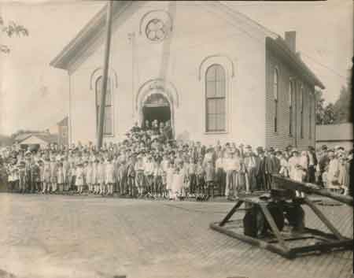

Ward-Thomas Museum


South Side Presbyterian Church
Ward — Thomas
Museum
Home of the Niles Historical Society
503 Brown Street Niles, Ohio 44446
Click here to become a Niles Historical Society Member or to renew your membership
Click on any photograph to view a larger image, click on image again to zoom into photograph.
|
Southside Presbyterian Church - Aug. 1, 1976. This is the oldest standing church in Niles, constructed in 1876. PO1.360 Southside Presbyterian Church, 1930. |
South
Side Presbyterian Past Century. The South Side Presbyterian Church was begun more than a hundred years ago by Welsh Presbyterians, who at the time were the principal residents of the city’s south side, known back in the early days as ‘Goat Hill’. In 1872, a lot was purchased at 104 West Second Street from David and Hannah Prosser and construction began on the building, under the leadership of the Davis Brothers. The church was dedicated in 1876 with the Reverend John Moses as its first pastor. The Hungarian Presbyterians purchased the Second Street building in 1924 and Reverend Stephen Czepke was its first resident pastor. In the early 1950s the interior of the church was remodeled. The ceiling was lowered to form an arch and the pulpit was also improved. Also, during the 1950s the church assumed the name of South Side United Presbyterian Church as an American Congregation has served well the community and its members. More extensive remodeling was done on the church during the 1960s. Three Sunday school rooms were added and a kitchen installed in the basement. Present pastor of the South Side United Presbyterian Church is Reverend Csaba Orosz.
Dedication of the church bell for the South Side Presbyterian Church.  At this time the sevices were in Hungarian due to the large number of Hungarian families attending the church. As the couples had children and the children
in the picture grew up but were not bi-lingual, two services were
offered: one in Hungarian and a second in English”.
Pat Wolfe |
|
| |
||
St. Luke’s Episcopal. |
This crude sketch of the building they met in on the southside was made by one of the older members of the church many years ago. It was probably the same building used by the Welsh Presbyterians before they built their church on Second Street. PO1.347 |
The Southside Presbyterian Church during the 1913 flood. PO1.1024 |
|
|
||
{kind=link}
{kind=link}
{kind=link}
{kind=link}
{kind=link}
{kind=link}